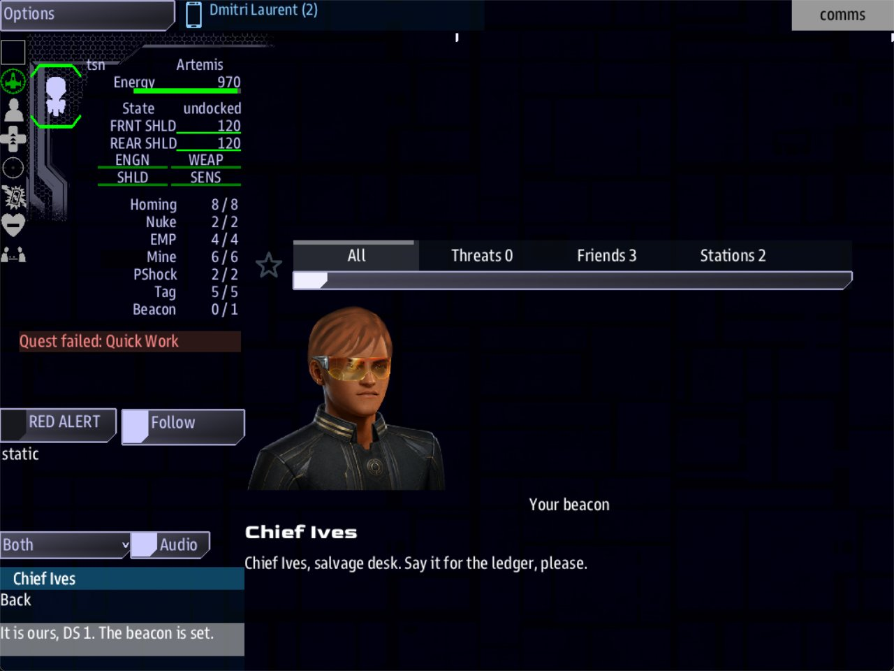

Class 2, Lecture 5 - Hails¶
What you will have at the end¶
The salvage quest no longer finishes by itself. When the beacon is set, the Quest Log tells the crew to report. DS 1 calls, a second voice comes on the line, and the quest pays when Comms says the words.
You will also know three things about every call you write from now on: which call sits at the top of the list, which ships are called, and what a Comms officer can do with a call that is waiting.

Comms on the report call: Chief Ives speaking, and one answer in the list.You will edit one file, mission.amd: two quest records and one scene. Nothing in
story.mast changes.
The video¶
About 6 minutes. Subtitles are available in the player.
Before you start¶
- Your mission as Lecture 4 left it. A crew that tells Quill "We will tag her." gets the quest Tag the Hulk, and about 30 seconds later she calls back.
sbs lint MyMissionsaysclean.- VS Code with the mission folder open, a command prompt open in
data\missions, and the game closed.
The game is started as in Lecture 3:
The game's word for a call is a hail. You have typed it since Lecture 3: When: hail,
and quill hails quill_hello. This lecture is about the call itself.
Step 1 - A step only an answer can finish¶
In Lecture 4 the quest finished on a clock and paid. Then Quill called to say well done. Nothing waited on that call. The crew could leave it in the list for the rest of the game.
Now the quest is not over until the crew has reported.
Find Tag the Hulk in the Quests section. Make three changes: take out the Reward:
line, change the Then: line, and add a sentence to the end of the description's first
paragraph.
### [Tag the Hulk](tag_hulk)
---
Scope: shared
Starts when: revealed
Objective: Give the salvage beacon 30 seconds to set
Done when: 30 seconds
Then: reveal report_in
---
 Harbormaster Quill, DS 1 traffic control
DS 1 wants a salvage beacon on the hulk before the Breakers find her. It pays when
the ship reports back.
A beacon makes her a claim on DS 1's salvage ledger. Until one is set, she belongs to whoever gets a line on her first, and the Breaker Cutter is already standing off.
Below it is the beat Beacon Set. Replace the whole record with this one:
### [Report to DS 1](report_in)
---
Scope: shared
Starts when: revealed
Objective: Answer DS 1 and tell her the beacon is set
Reward: 150 credits
Action:
- quill hails quill_thanks
---
 Chief Ives, salvage desk, DS 1
The beacon is live. DS 1 pays when she hears it from the ship.
Chief Ives will not write a claim into the ledger on a beacon's signal alone. Somebody aboard the ship that set it has to say so on Comms, so that it is on the record.
This is a quest, not a beat. Compare it with the beat it replaces.
| Line | What it means |
|---|---|
No Beat line |
A quest is in the Quest Log while it is running. A beat is not. The crew can now see that something is expected of them |
Objective: |
The sentence the crew reads. Here it sends them to Comms |
Reward: |
The pay has moved here. It is paid when this step completes |
Action: |
The same two lines the beat had. Action: works on any quest. It happens the moment the quest starts |
No Done when: line |
Nothing in the game finishes this step by itself. Only an answer can |
| The description | Chief Ives's face, copied from his Face: line as in Lecture 2: the ledger is his. Then what has happened, and, after a blank line, why the crew has to say it out loud. The objective gives the order; the description gives the reason |
In Tag the Hulk the new sentence runs onto a second line in the file. That is fine: there is no blank line between the two, so the Quest Log joins them into one paragraph and wraps it to fit.
Save. Run lint: clean.
Step 2 - The answer that finishes it¶
Go to the end of the file, to the scene Quill Calls Back. She should ask now, not congratulate. Change her takes and the answer:
### [Quill Calls Back](quill_thanks)
---
Speaker: quill
When: hail
Title: Your beacon
---
% Something just started singing out by that hulk. Tell me it is yours.
% I have a new beacon on my board, out by the hulk. Is that your work?
- [It is ours, DS 1. The beacon is set.]() ; completes report_in
completes is one of the four words from Lecture 4. It finishes the step and pays its
Reward:.
One rule for a call that a step is waiting on.
Every answer that ends the call finishes the step. Suppose you add a second answer,
- [Not now, DS 1.](). A crew that picks it has ended the call. The call does not come
back, and Report to DS 1 stays in the Quest Log for the rest of the game. Lint cannot see
this.
The crew already has a way to say "not now". It is Back, from Lecture 3: the call goes back in the list, and the step waits with it.
Save. Run lint: clean.
Step 3 - A second voice¶
A call can have more than one person on the line.
Chief Ives has been in your Characters section since Lecture 2, with nothing to say. His
key is ives. Give him a block in the call. Change the lines under the fence of Quill
Calls Back so the scene reads:
### [Quill Calls Back](quill_thanks)
---
Speaker: quill
When: hail
Title: Your beacon
---
@quill
% Something just started singing out by that hulk. Tell me it is yours.
% I have a new beacon on my board, out by the hulk. Is that your work?
@ives
% Salvage desk. If it is theirs, I need to hear them say it.
% Chief Ives, salvage desk. Say it for the ledger, please.
- [It is ours, DS 1. The beacon is set.]() ; completes report_in
In Lecture 3 an @quill line started the next thing Quill said. An @ line with another
character's key hands the call to that person. The name and the face change with the
block. The crew reads Quill, presses Continue, and reads Ives.
Four things to know.
- The call still belongs to the
Speaker:. In the list it isHarbormaster Quill - Your beacon, whoever speaks inside it. - The line is
@and a key, and nothing else.@ives. Not@Chief Ives, not@ ives, not@ives:. Each of those stops being a block. His takes become more of Quill's takes, and lint saysclean. - Each block has its own takes. The game picks one take from each block, the same as before.
- The answers still come with the last block, wherever you type them. Keep them at the end of the scene.
A block can come first as well. Put @ives above @quill and he opens the call.
Save. Run lint: clean.
Step 4 - Which call is on top¶
Calls wait in a list on the Comms console. You now have more than one call in your mission, so it is worth knowing how the list is ordered.
| Fact | What it means for your writing |
|---|---|
| The newest call is at the top | A call that matters can be pushed down by a later one |
A row reads name - title |
The Title: line is the only thing that tells two calls from the same person apart. A call with no Title: reads Harbormaster Quill and nothing else |
| A call does not time out | It waits until Comms answers it. Nothing in your fact sheet takes a call back |
| One call is open at a time | While Comms is in a call, the others wait |
To keep a call at the top, give its scene a Priority: line. Add one to Quill Calls Back:
A call with a higher number sits above every call with a lower one, however new they are.
A call with no Priority: line counts as 0. Write a whole number. Use it for a call that
a step is waiting on, and leave the others alone.
Save. Run lint: clean.
Step 5 - Who gets called¶
You have never said which ship Quill calls. You do not have to: every player ship is called. With one ship in the game there is nothing more to it.
Your mission can be started with more than one ship. This is what happens with two.
| Moment | With two ships |
|---|---|
| The call is placed | Each ship gets its own copy, in its own Comms list |
| One ship answers | Only that ship's copy ends. The other ship's copy is still waiting |
| One ship says "We will tag her." | The quest starts for everyone. There is one Tag the Hulk, and both crews see it in their Quest Logs |
| The other ship then says "Find someone else, DS 1." | Nothing changes. The quest goes on |
| The report call | Goes to both ships. The first to report finishes the step, and the side is paid once. A second report changes nothing |
| A ship says "We will tag her." after the quest is finished | Nothing. A finished quest stays finished |
Two things follow for a writer.
- Write the words for any ship that might hear them. Your opening take says
Artemis, DS 1.The crew of the Intrepid reads the same line. - A quest handed out by a call suits a mission flown by one ship. With two, the second crew's answer counts for nothing.
All of this follows from the line Scope: shared: one quest for the whole table. The
library documentation also describes Scope: ship, a copy of the quest for each ship. In
a mission made from this template it changes nothing. Leave Scope: shared on your
quests.
Step 6 - What Comms can do with a call¶
This step has nothing to type. It is what the person at Comms can do with what you wrote.
| Comms does this | What happens |
|---|---|
| Leaves the call in the list | It waits |
| Opens it | The conversation is drawn on the Comms console and on the main screen, so the whole bridge can follow. Only a Comms console can open a call or answer one |
| Presses Back | The call goes back in the list, unanswered. Nothing in the story changes. Opened again, it starts from the first block of the scene the crew had reached |
| Turns the drop-down above the list | Both, Main Screen, This Console or Off. It starts on Both. It moves where the conversation is drawn. It answers nothing |
| Opens the Hails tab of the info panel (the last icon in the left column) | Every finished call gets a row there, under the name of who called. A row is a record that the call happened: clicking it only highlights it, and the words are not shown again |
| Reads the ship's log | Each finished call leaves one line, in the strip under the left panel: who called, what about, and what the crew answered |
So an answer is a decision the crew makes once. Everything else on the console lets them put that decision off.
Your finished pieces¶
In the Quests section:
### [Tag the Hulk](tag_hulk)
---
Scope: shared
Starts when: revealed
Objective: Give the salvage beacon 30 seconds to set
Done when: 30 seconds
Then: reveal report_in
---
 Harbormaster Quill, DS 1 traffic control
DS 1 wants a salvage beacon on the hulk before the Breakers find her. It pays when
the ship reports back.
A beacon makes her a claim on DS 1's salvage ledger. Until one is set, she belongs to whoever gets a line on her first, and the Breaker Cutter is already standing off.
### [Report to DS 1](report_in)
---
Scope: shared
Starts when: revealed
Objective: Answer DS 1 and tell her the beacon is set
Reward: 150 credits
Action:
- quill hails quill_thanks
---
 Chief Ives, salvage desk, DS 1
The beacon is live. DS 1 pays when she hears it from the ship.
Chief Ives will not write a claim into the ledger on a beacon's signal alone. Somebody aboard the ship that set it has to say so on Comms, so that it is on the record.
At the end of the file:
### [Quill Calls Back](quill_thanks)
---
Speaker: quill
When: hail
Title: Your beacon
Priority: 5
---
@quill
% Something just started singing out by that hulk. Tell me it is yours.
% I have a new beacon on my board, out by the hulk. Is that your work?
@ives
% Salvage desk. If it is theirs, I need to hear them say it.
% Chief Ives, salvage desk. Say it for the ledger, please.
- [It is ours, DS 1. The beacon is set.]() ; completes report_in
The whole file is in example\.
Step 7 - Check it¶
Every row below was made on purpose, one at a time, on the finished file. Lint was run, and then the game was run without a screen, by a script that took the quest, waited for the beacon, opened the report call and answered it.
Lint names these.
| Mistake | What the game does | Lint says |
|---|---|---|
; completes report_inn (a misspelled key) |
Ends the call and leaves Report to DS 1 running. It writes a line in mast.runtime.log |
outcome-quest-missing |
; completes Report to DS 1 (the name, not the key) |
The same | outcome-quest-missing |
Then: reveal beacon_set left as it was |
Never starts the step. No call comes | dangling-reveal |
@ivse (a misspelled key) |
Shows his block under the name ivse, with no face |
dangling-speaker |
| No record for Chief Ives in the Characters section | Shows his block under the name ives, with no face |
dangling-speaker |
Priorty: 5 |
Places the call with no priority | unknown-field. It asks Did you mean and gives the word |
Priority: 5 typed in the fence of Report to DS 1 |
Places the call with no priority | unknown-field |
Priority 5 (no colon) |
Places the call with no priority | fence-syntax, an error: it expected Label: value |
When: hail left off the scene |
Places the call anyway | hail-not-a-hail |
Scope: everyone |
Nothing different | unknown-enum-value |
What lint cannot see. For every row of this table lint says clean.
| You wrote | What happens |
|---|---|
The Beat line is still in the fence of Report to DS 1 |
The step works and pays, but it is not in the Quest Log while it is running. The crew is never told to report |
The answer in the report call is left as (), or the scene has a second answer that hangs up |
The call ends and Report to DS 1 stays running for good |
The answer says ; completes tag_hulk, the wrong step |
The same |
Reward: 150 credits is still on Tag the Hulk as well |
The quest pays twice |
The Then: reveal report_in line is missing |
The beacon sets and nothing follows. No step, no call |
The Action: lines are left off Report to DS 1 |
The step appears in the Quest Log, and no call comes. It can never be finished |
Done when: 30 seconds on Report to DS 1 |
The step finishes by itself and pays. The call is left waiting in the list |
Starts when: at once on Report to DS 1 |
The call arrives as the game starts. Answering it pays 150 credits before any work is done |
A Fails when: clock on Report to DS 1 |
The step fails on time and charges its Penalty:. The call stays in the list, and answering it late changes nothing |
@Chief Ives, @ ives, @ives:, ives:, or % @ives |
His block is gone. His takes are now alternatives to Quill's, and so is the stray line |
| Chief Ives typed under the Dialogue heading | His block is shown under the name ives, with no face |
Priority: high |
The call never arrives. mast.runtime.log has a line that names high |
Scope: ship |
Nothing different. See Step 5 |
These are fine.
| You wrote | Result |
|---|---|
@Ives, with a capital |
Works |
@ives above @quill |
Works. He opens the call, and she speaks second |
A second voice from another side: @sable |
Works. Anyone in your cast can be on the line |
No Objective: line on Report to DS 1 |
Works. The step is listed by its name alone |
Step 8 - Play it¶
- Fly inside 500 of the Unknown Hulk. On Comms, open Harbormaster Quill - About that hulk and answer through to We will tag her.
- The Quest Log has Tag the Hulk, running.
- About 30 seconds later Tag the Hulk is done, and the Quest Log has Report to DS 1, running. The beacon has paid nothing yet. Comms has a new row: Harbormaster Quill - Your beacon.
- Open it. Quill asks her question. The list offers Back and Continue.
- Press Continue. The name and the face are now Chief Ives. The list offers Back and your answer.
- Press Back. The call is in the list again, and Report to DS 1 is still running.
- Open the call again. It starts with Quill. Press Continue, then choose It is ours, DS 1. The beacon is set.
- The call is over. Report to DS 1 is done, and the side is paid 150 credits. The ship's
log has a new line:
Harbormaster Quill - Your beacon - answered (It is ours, DS 1. The beacon is set.) - On Comms, open the Hails tab of the info panel (the last icon in the left column). Both calls are listed, each as a row with the caller's name.
- Finish the story, and close the game.
mast.compile.logandmast.runtime.logare both empty.
Play it once more, and this time set the drop-down above the list to This Console before you open the first call. The conversation is drawn on Comms only.
If something goes wrong¶
| What you see | Likely cause |
|---|---|
| The beacon sets and nothing follows | Run lint. Then work down this list. Then: reveal report_in is missing. The key on the heading of Report to DS 1 is not report_in. The Action: lines are missing |
| Report to DS 1 is not in the Quest Log while the call waits | The Beat line is still in its fence |
| Comms answers, and Report to DS 1 stays in the Quest Log | The answer has no ; completes report_in, or the key is misspelled. Look in mast.runtime.log |
| The quest pays as soon as the beacon sets | Reward: is still on Tag the Hulk |
| The quest pays 300 credits | Reward: is on both records |
| The call arrives as the game starts | Report to DS 1 does not say Starts when: revealed |
| Ives's line is shown under Quill's name, and there is no Continue | His @ line is not @ and a key. See Step 3 |
Now and then Quill says @Chief Ives out loud |
The same |
His block is shown under the name ives, with no face |
His record is missing, or it is not in the Characters section |
The call never arrives, and it did before you added Priority: |
The value after Priority: is a word, not a number. mast.runtime.log names it |
| The report call sits below an older call | The Priority: line is in the wrong fence, or misspelled. Run lint |
Exercise¶
Work on the calls you already have.
- Give Quill's first call a second voice. In Quill Checks In, put an
@ivesblock between her two blocks, with two takes of his own. - Captain Sable has not said a word yet. Give the scene The Offer an
@sableblock below Quill's takes, above the answers: the Breakers are listening in. Run lint, then play, and watch the name and the face change twice in one call. - Break the report on purpose. Take
; completes report_inoff the answer in Quill Calls Back. Run lint:clean. Play it through and give that answer. The call is gone, and Report to DS 1 is still in the Quest Log. Put it back. - In the Lecture 3 exercise you wrote a second call, placed at the lifeboat. Leave the
first call unanswered, fly to the lifeboat, and look at the list: the newer call is on
top. Now give Quill Checks In the line
Priority: 5and play again.
Checkpoint¶
You are done when all five are true:
sbs lint MyMissionanswersclean, with0 error(s), 0 warning(s).- When the beacon sets, Report to DS 1 is in the Quest Log, running, and the beacon has paid nothing.
- The report call has two voices. The name and the face change when Comms presses Continue.
- Back returns the call to the list and leaves Report to DS 1 running.
- It is ours, DS 1. The beacon is set. completes Report to DS 1, and the side is paid 150 credits.
Next¶
Lecture 6 is a first look at reputation: a side that remembers what the crew did.
Further reading¶
- "Incoming hails" in the library documentation: "Placing the call", "What the crew sees" and "Longer conversations".
- "Quests" in the library documentation: the table of quest fields.
That documentation shows four things this lecture left out. Two of them you can try on your own now; two need something you do not have yet.
| You will see | Why it is not in this lecture |
|---|---|
At start: posting, a quest listed for the crew with no Accept button, taken only by answering a call |
It works: the tablet's Available Quests lists it as Posted, and selecting it says it is taken by answering the call. Your hidden quest, started by an answer, does the same work without showing the crew the quest first. Use posting when you want them to see it coming |
Scope: ship |
See Step 5 |
Presentation: still and Presentation: orbit |
A call is drawn as a portrait unless you say otherwise, and that needs nothing. still needs a picture file and a Backdrop: line. orbit is a moving shot of a ship on the main screen: add Subject: and a landmark's key or a role (Subject: derelict) |
Audio: |
It plays a recorded line when the call opens. It needs a sound file you have recorded, as a .wav, kept inside your mission folder |
Download this lecture's finished files (a zip of its example folder).